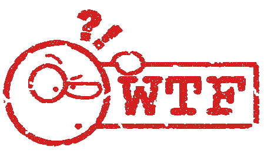

Delia Treichler & Sandra Weber
Ausgangslage
TODO: Bild vom Scrumboard?
Mit Agilo Boards

Scrum Board
for the daily standup

Backlog Board
to prioritizing the backlog
Tools und Frameworks

Grunt
Build System

Bower
Package Manager

AngularJS

Protractor
UI Testing with Selenium
Print your presentation
This is easy: use the suffix ?print-pdf in the address bar to enter print mode
Speaker notes
Press 's' on the keyboard
Image with nice shadow effect:
Destkop vs. Phone vs. Tablet
see presentation.js for code and help yourself with chartjs
Mobile Devices
Apple 71%
Samsung 18%
HTC 2%
Sony 1.5%
Nokia 0.8%
Vertical Slides
Slides can be nested inside of other slides, try pressing down.
Basement Level 1
Press down or up to navigate.
Basement Level 2
That's it, time to go back up.
Point of View
Press ESCto enter the slide overview.
Hold down alt and click on any element to zoom in on it using zoom.js. Alt + click anywhere to zoom back out.